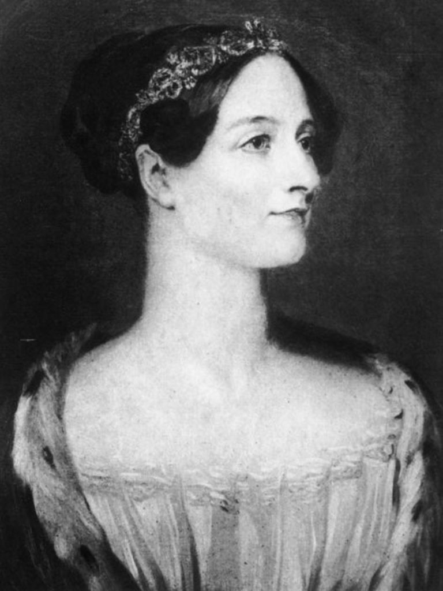

Born in London, England
Lord Byron and his wife parted ways
The unnatural mother
Lord Byron passed away
Wrote her first book
A sickly child
Ada's first love
Charles Babbage and difference engine
Marriage to William King
Byron was born
Anne was born
The earl and countess of Lovelace
Ralph Gordon was born
Return to work
The first computer program
Struggle with addiction
Ada's eldest son went to sea
The horse racing venture
The cancer diagnosis
Ada Lovelace died at age 36